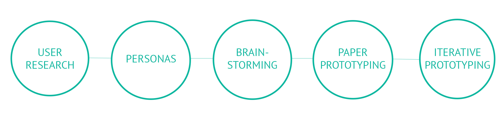
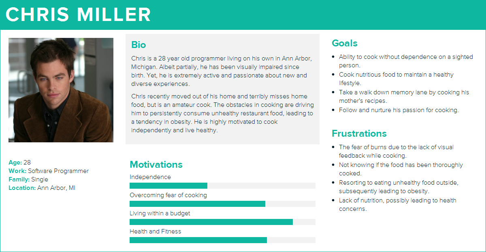
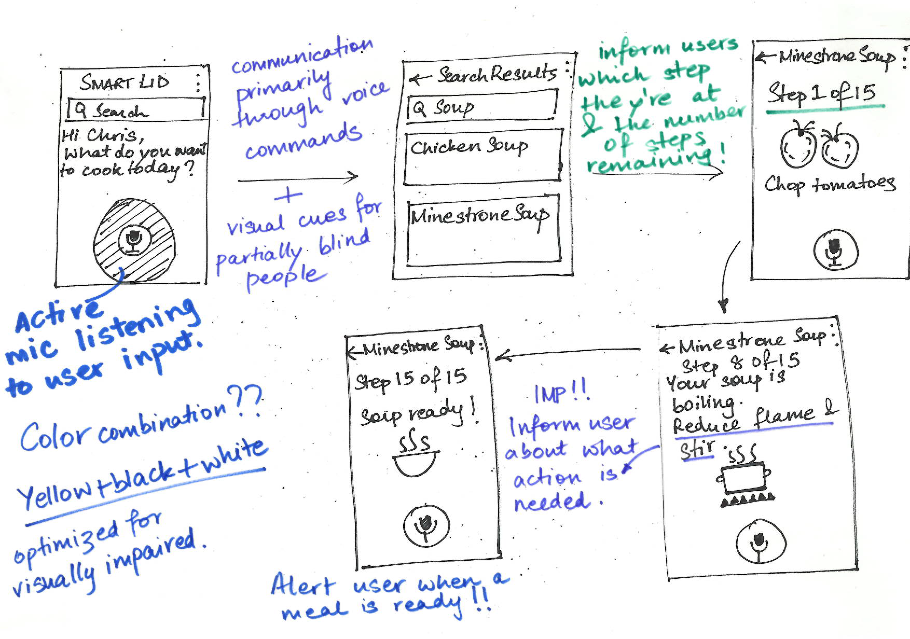

The Process
As per the World Health Organization (WHO), 285 million people are estimated to be visually impaired worldwide: 39 million are blind and 246 million have low vision.
The health of the visually-impaired seems to be affected by the type of diet that they choose on a daily basis depending on the convenience of options around them. It has been observed that cooking can be a difficult and dangerous experience for them.The lack of visual feedback steers them away from cooking and seeking easily available unhealthier food options, leading to obesity. Presently, they have reported burning themselves or a fear of burning themselves as a result of not being able to see in the kitchen. Moreover, they are currently determining whether the food is done using techniques like touching the food, with help of a sighted person and overcooking the food to ensure it was thoroughly cooked. Yet, they still find it hard to tell if their food has been properly cooked.
We created a persona of a sample user, his background, goals, motivation, and fears, to get a better understanding of the target users.
We approached a subset of this problem; determining when the food is cooked. We brainstormed different solutions to this problem over a period of two weeks.
Finally, we settled on an IR thermometer for measuring the temperature for two reasons:
- It doesn't need to touch the food.
- It doesn't heat up easily.
- A user had the flexibility of using the same knob on lids of different shapes and sizes.
- It would be highly useful for cooking without a lid, as the knob could be attached to a lid-like mesh of heat-resistent wires.
We drew rough sketches of the prototype using paper, to determine the basic screen layout, interactions and user workflows.
We developed high-fidelity prototypes, building off the sketches.
Some of the factors taken into consideration were:
- A color scheme of black, white and yellow, that is optimized for the partially blind.
- The presence of visual cues along with voice commands, particularly for the partially blind.
- Feedback of progress to the user, to help the user anticipate the number of steps completed and remaining.
- An alarm to alert the user when the food is ready, which proffers the flexibility to move around completing other tasks as the food cooks.